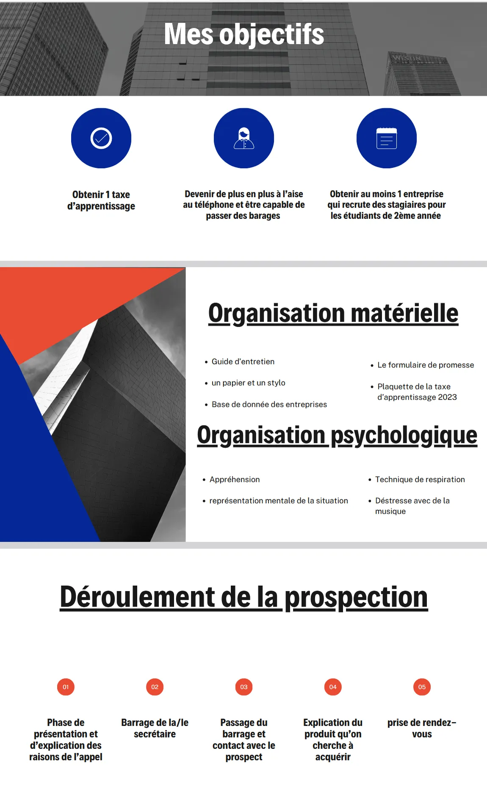
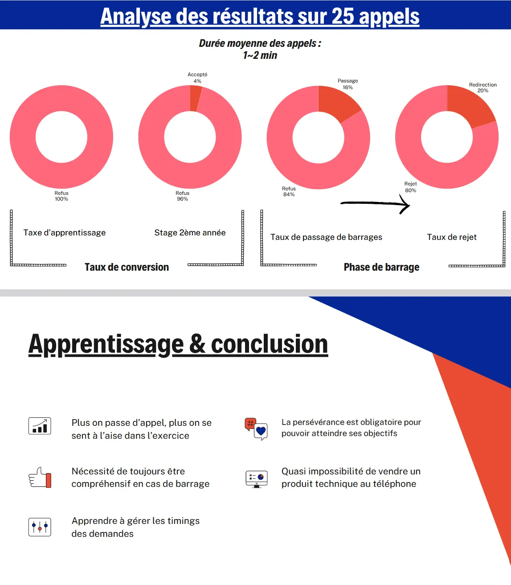
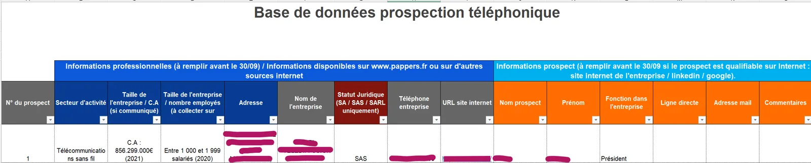

Tim Agoune
Tim Agoune01Objectif
Convaincre des entreprises de verser leur taxe d'apprentissage à l'IUT de Sceaux : un exercice de prospection téléphonique réel, avec de vrais interlocuteurs, de vrais barrages et un enjeu financier concret pour l'établissement.
02Démarche
J'ai d'abord construit une base de données des entreprises à contacter (identité, qualification, historique des appels), puis rédigé un guide d'entretien avant de passer les appels. Le bilan est analysé dans mon retour d'expérience : 25 appels d'une durée moyenne de 1 à 2 minutes, un taux de passage de barrage de 16 % et 4 % de conversion sur la recherche de stages — aucune promesse ferme sur la taxe d'apprentissage, ce qui montre la difficulté de vendre par téléphone. Ce projet m'a surtout appris que la prospection repose d'abord sur la qualité de la base de données : une entreprise bien qualifiée avant l'appel augmente les chances de succès. Le suivi des statuts d'appel permet ensuite de calculer des indicateurs — taux de barrage franchi, taux de conversion — et donc d'analyser et d'améliorer sa performance.


03Moyens et outils
- Classeur Excel structuré en base de données de prospection : identité, qualification, historique multi-appels, indicateurs de performance calculés sur les statuts finaux ;
- guide d'entretien téléphonique rédigé en amont ;
- sources publiques de qualification : Pappers, LinkedIn, sites des entreprises.
